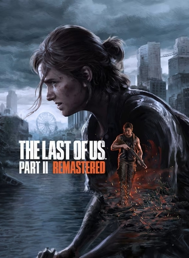

2026年10月 1 条
2026-10-15 21:48:00
闲逛豆瓣有感
说
突然想起那个领我入坑豆瓣的高中老同桌，点开账户却发现账号已经注销，这大抵就是备份豆瓣的意义吧～ 当好友注销了账号：从「页面不存在」到 WARC 里复活的高中同桌 —— 开发日志 @豆友69305634
广播发布后不可编辑，所以每条都是那一刻的原话。
闲逛豆瓣有感
说
突然想起那个领我入坑豆瓣的高中老同桌，点开账户却发现账号已经注销，这大抵就是备份豆瓣的意义吧～ 当好友注销了账号：从「页面不存在」到 WARC 里复活的高中同桌 —— 开发日志 @豆友69305634

不是，等下，怎么又重制，我抽屉里躺着的ps5 tlou2是什么
想读 随机漫步的傻瓜
为什么凸凹还没上映啊。。。
 看过 狂飙 ★★★★☆
看过 狂飙 ★★★★☆
没有机会完整看，只看了后面1/3的集，在各种限制下剧情还可以，内容也算是近些年难得的尺度较大的剧了。
本来以为是和孤独的美食家类似的节目
Visual Arts Key???
 玩过 帝国时代4 Age of Empires IV ★★★★★
玩过 帝国时代4 Age of Empires IV ★★★★★
老了战役打不动了，xgpu还是真香，微软感觉买了索尼，我买爆xbox
 看过 将恋爱进行到底 / 恋はつづくよどこまでも ★★★★☆
看过 将恋爱进行到底 / 恋はつづくよどこまでも ★★★★☆
翻emby公益服日剧区的时候看到了这个，点了进来，因为封面我认识！宫水三叶！好歹也是我看了无数遍的动画配音和YouTube常规推送（歌曲、采访之类的）。开头意外的有趣，剧本尬归尬，萌音演技还是过关的，唱功也是。剧情和配乐还真的有一股Persona 5的感觉，重金属一出来就知道要到紧张的部分了，慢摇的地方也很日常。剧情有不少催泪的地方，看完很有一种想去当医生的冲动。写代码和拧螺丝什么的有什么意义！真羡慕Tendo和Sakura有这么棒的同事，这么简单的生活，这么纯粹的感情，有被甜齁到谢谢。和前段时间看的《钱断情始》有点类似。頑張って！
 玩过 十三机兵防卫圈 十三機兵防衛圏 ★★★★★
玩过 十三机兵防卫圈 十三機兵防衛圏 ★★★★★
拖了快一年，终于通关了，画风非常喜欢，剧情用抽丝剥茧地呈现出来，机甲战斗直接用指点江山的地图呈现，意外地有趣。科幻的架空设定也是非常棒了，本以为分成5个区（加0区）就没了，结果还有更甚。期待下一作。
How to play soul game? Waiting online, hurry up~
 想看 鬼灭之刃 剧场版 无限列车篇 / 劇場版 鬼滅の刃 無限列車編
想看 鬼灭之刃 剧场版 无限列车篇 / 劇場版 鬼滅の刃 無限列車編
画面真是太美了
 在看 鬼灭之刃 / 鬼滅の刃 ★★★★★
在看 鬼灭之刃 / 鬼滅の刃 ★★★★★
bdrip的观看体验真棒啊（其实也一定程度被女主声优圈粉
 转发 仙剑奇侠传七
转发 仙剑奇侠传七
画面做的确实不错，unreal4的性能相当好，3060ti满特效无压力，场景的美工做的也很不错，开始游戏的竹林真漂亮，不过游戏手柄的测试绝对没有做 =。= 手柄走路可以打断特效音效可还行？手柄镜头速度调到8%才和persona 5的速度一样简直了。。。开发人员都是宇航员吗？！
在玩 仙剑奇侠传七
试玩版来玩玩
看过 电话 / 콜 ★★★★★
netflix上看完，开篇还以为是一个美好的故事，结果越看越不对，果然强行改变他人的命运是不可能的，只能改变自己的，太扎心了。女主演的很好~
 看过 成神之日 / 神様になった日 ★★★★☆
看过 成神之日 / 神様になった日 ★★★★☆
看豆瓣说13集，原来是写错了啊，12集完结。音乐满分，但是结局很像Charlotte的结局，成功赚了我一波眼泪，剧情安排的真的很仁慈了（相比于前作），但与之而来的就是结局太好预料了，甚至最后一集我之前就已经脑补出来了。。。一言难尽，没有让我有很想给5星的欲望
 看过 灰姑娘 / Cinderella ★★★★★
看过 灰姑娘 / Cinderella ★★★★★
虽然各种尴尬，剧情跳跃，但是音乐和剧情真的美。童话故事怎么这么美啊。。。写童话故事的人可真好(kind)。迪士尼真的是童话梦工厂。 // 再次被迪士尼的音乐圈粉。。。《Strong》真好听